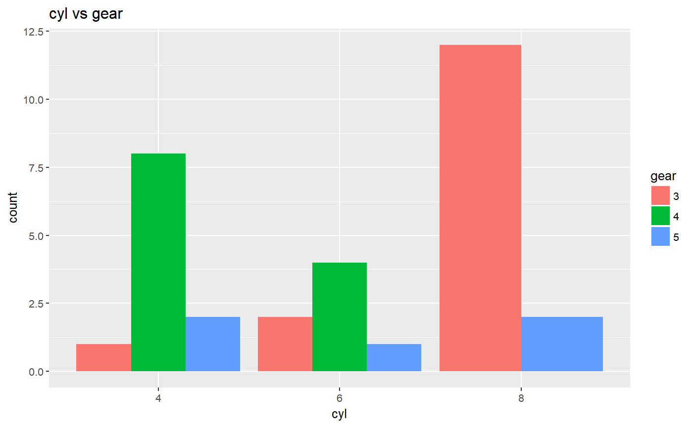
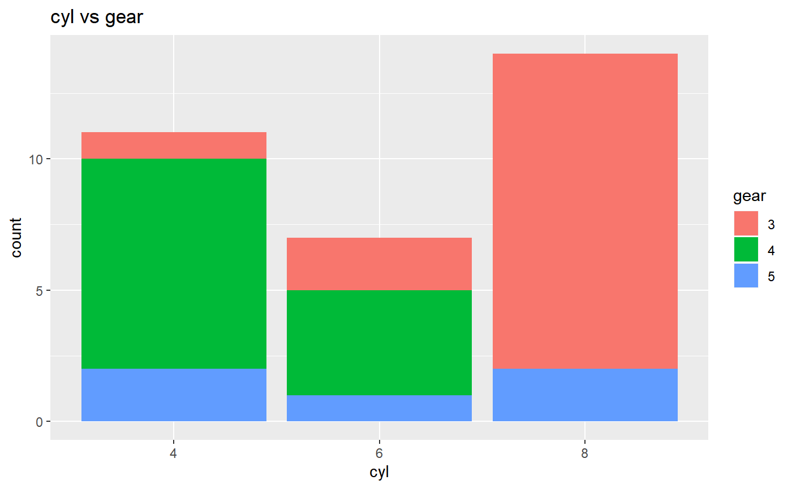
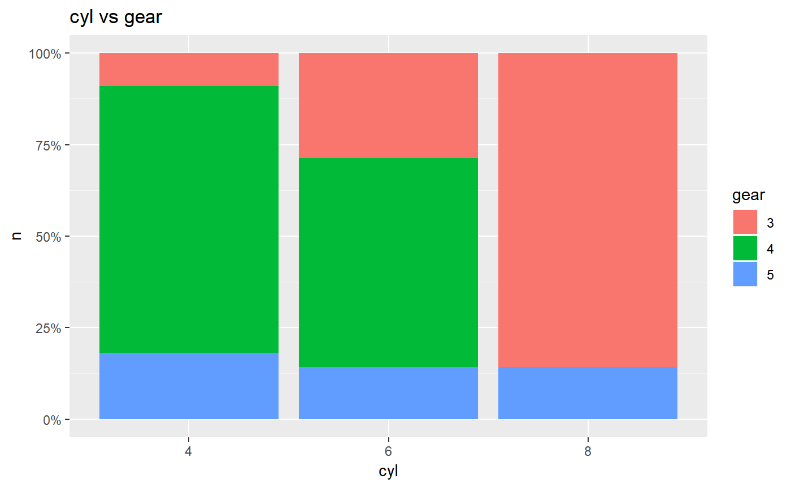

Creates two way tables of categorical variables. The tables created can be visualized as barplots and mosaicplots.
ds_cross_table(data, var1, var2) # S3 method for ds_cross_table plot(x, stacked = FALSE, proportional = FALSE, print_plot = TRUE, ...) ds_twoway_table(data, var1, var2)
| data | A |
|---|---|
| var1 | First categorical variable. |
| var2 | Second categorical variable. |
| x | An object of class |
| stacked | If |
| proportional | If |
| print_plot | logical; if |
| ... | Further arguments to be passed to or from methods. |
k <- ds_cross_table(mtcarz, cyl, gear) k#> Cell Contents #> |---------------| #> | Frequency | #> | Percent | #> | Row Pct | #> | Col Pct | #> |---------------| #> #> Total Observations: 32 #> #> ---------------------------------------------------------------------------- #> | | gear | #> ---------------------------------------------------------------------------- #> | cyl | 3 | 4 | 5 | Row Total | #> ---------------------------------------------------------------------------- #> | 4 | 1 | 8 | 2 | 11 | #> | | 0.031 | 0.25 | 0.062 | | #> | | 0.09 | 0.73 | 0.18 | 0.34 | #> | | 0.07 | 0.67 | 0.4 | | #> ---------------------------------------------------------------------------- #> | 6 | 2 | 4 | 1 | 7 | #> | | 0.062 | 0.125 | 0.031 | | #> | | 0.29 | 0.57 | 0.14 | 0.22 | #> | | 0.13 | 0.33 | 0.2 | | #> ---------------------------------------------------------------------------- #> | 8 | 12 | 0 | 2 | 14 | #> | | 0.375 | 0 | 0.062 | | #> | | 0.86 | 0 | 0.14 | 0.44 | #> | | 0.8 | 0 | 0.4 | | #> ---------------------------------------------------------------------------- #> | Column Total | 15 | 12 | 5 | 32 | #> | | 0.468 | 0.375 | 0.155 | | #> ----------------------------------------------------------------------------# alternate ds_twoway_table(mtcarz, cyl, gear)#>#> # A tibble: 8 x 6 #> cyl gear count percent row_percent col_percent #> <fct> <fct> <int> <dbl> <dbl> <dbl> #> 1 4 3 1 0.0312 0.0909 0.0667 #> 2 4 4 8 0.25 0.727 0.667 #> 3 4 5 2 0.0625 0.182 0.4 #> 4 6 3 2 0.0625 0.286 0.133 #> 5 6 4 4 0.125 0.571 0.333 #> 6 6 5 1 0.0312 0.143 0.2 #> 7 8 3 12 0.375 0.857 0.8 #> 8 8 5 2 0.0625 0.143 0.4